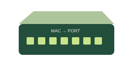

LOCAL DELIVERYSwitch
Connects devices within a LAN. Learns MAC addresses and forwards known unicast frames to the correct port.
See it in school
The classroom PCs connect to a switch. Unknown destinations and broadcasts are flooded to other ports within the same VLAN.